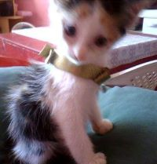
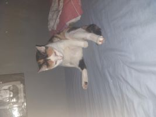
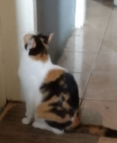

Nina foi adotada há 1o anos quando ainda era um bebê. Ela estava sozinha literalmente no meio da rua, enquanto seus irmãos estavam na calçada, quando minha mãe a trouxe para nossa casa ainda muito pequena. 
Nina cresceu num ambiente cheio de amor. Ela tem o rabo quebrado e o corpo tricolor (preto, branco e laranja). Não é muito simpática com visitas e as vezes parece querer substituir minha mãe, como quando derrubamos algo fazendo muito barulho Nina aparece procurando quem derrubou e parte para o seu especial método de educar: tapas.

Nina costuma sentar de formas peculiares. Às vezes sinto que ele um dia vai falar como um humano e tentar dominar o mundo c seu jeitinho especial, começando pelo seu núcleo familiar, claro.
Nina tem alguna hábitos humanóides, como quando ela insistiu em que deixássemos seu pote de água no banheiro porque, por algum motivo, era melhor beber água lá. Além disso, ela insiste em ficar esperando na porta do banheiro quando tem gente dentro, ainda não sabemos se é um tipo de verificação para saber se ainda estamos vivos lá dentro ou porque ela simplesmente gosta de acelerar nosso banho.
Nina tem suas peculiaridades mas a gente ama mesmo assim. Brincar correndo atrás do nossos pés é uma de suas brincadeiras favoritas. Além de que só dorme com sua touquinha e cobertinha. É uma gata mimada e muito amada. Ela pode não fazer parte da minha vida toda, mas fizemos parte de toda a vida dela e por isso queremos que os seus momentos sejam os mais felizes.